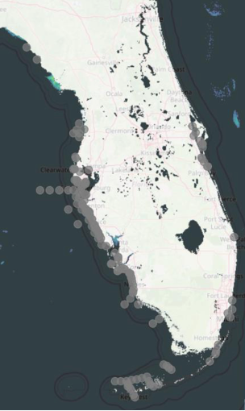

3 Giovanni: Climate Data 2
3.1 Lab
3.1.1 Case: Analyzing Correlation Between Water Surface Temperatures and Water Blooms in the Black Sea and the Sea of Azov
Background
저수지의 부영양화(물꽃 현상, Blooming of reservoirs)는 식물성 플랑크톤(Phyto-plankton)의 대량 번식으로 인해 물의 색깔이 변하고 수중의 산소 공급이 저해되는 현상이다. 이러한 현상의 원인 중 하나는 무기물, 특히 인 비료, 합성 세제, 유기 오염물질의 유입 때문이다. 해양 환경에서는 단세포 미세 플랑크톤인 식물성 플랑크톤(또는 미세 조류)이 먹이사슬의 기초를 이루며, 거의 모든 다른 해양 생물들은 여기에 의존한다. 알려진 식물성 플랑크톤 종의 약 2%는 해롭거나 독성을 가진다. 유해 조류 번식(Harmful algal blooms)은 특히 해양 포유류, 바다거북, 해안 조류, 어류 등 다양한 해양 생물에 면역학적, 신경학적 또는 생식 장애를 일으켜 부정적인 영향을 미칠 수 있다.
그 대표적인 예로는 2004년 봄 플로리다 해안에서 107마리의 병코돌고래(Bottlenose dolphins)가 브레베톡신(Brevetoxins)이 높은 어류를 섭취하여 폐사한 사례가 있다(Twiner et al. 2012). 식물성 플랑크톤의 성장과 번식을 유발하는 요인 중 하나는 수온 변화입니다. 온도 상승은 지구 기후 변화의 한 형태이기도 합니다. 위성으로부터 얻는 엽록소 농도(chlorophyll concentrations) 데이터는 식물성 플랑크톤의 발달과 물꽃 현상을 분석하는 데 사용된다. 엽록소 농도는 수중 내 광합성 미생물의 양을 나타내는 지표이다.
Task
NASA의 Giovanni 사이트에서 데이터 시각화를 사용하여 흑해(Black Sea)와 아조프해(Sea of Azov)에서 수온(water temperature)과 엽록소 농도(chlorophyll concentrations) 사이에 상관관계가 있는지 확인해 보자.
Tasks to be performed in this lab:
2015년부터 2019년까지 여름 기간 동안 흑해(Black Sea)와 아조프해(Sea of Azov)의 평균 엽록소 농도 지도를 작성하고, 엽록소 농도가 높은 해역을 확인.
2015년부터 2019년까지 흑해와 아조프해의 평균 수면 온도 지도 생성.
2019년의 엽록소 농도와 수면 온도 간의 상관관계 지도를 확인하고, 두 해역(흑해와 아조프해) 중 어느 해역에서 이러한 요소들 간의 상관관계가 더 높은지 확인.
Official Website: https://giovanni.gsfc.nasa.gov/giovanni/
3.1.1.1 엽록소 지도 생성
- 먼저, 흑해(Black Sea)와 아조프해(Sea of Azov)의 평균 엽록소 분포 지도 생성. 이를 위해 장기 평균 계절별 엽록소 농도를 표시하는 도구를 사용. 즉, 2015년부터 2019년까지 여름철(6월 ~ 8월) 동안의 평균 엽록소 농도 지도를 작성.
- 흑해와 아조프해에서 물꽃 현상의 정점은 일반적으로 여름철에 관찰되기 때문에 여름철을 선택. 또한, 5년 동안의 평균값을 사용하면 한 해에만 나타난 극단적인 기상 조건의 영향을 중화할 수 있음. 따라서 좌측 상단
Select Plot에서Map, Recurring Averages를 선택.

Select Seasonal Dates 에서 JJA(June, July, August - 즉, 여름철)를 지정하고, 기간은 2015~2019년까지로 설정.

Select Region에서 첫 번째 도구( )를 클릭하여 지도를 선택창을 실행한 다음, 흑해(Black Sea)와 아조프해(Sea of Azov)를 선택.
)를 클릭하여 지도를 선택창을 실행한 다음, 흑해(Black Sea)와 아조프해(Sea of Azov)를 선택.

- 분석할 데이터를 지정: 좌측 메뉴
Select variable에서Measurements탭을 확장한 후,Chlorophyll체크. 우측에 표시되는 Variable 중에서,ChlorophyII a concentration (water only)선택 후 Plot Data.

2015년부터 2019년까지 여름철 동안의 평균 엽록소 농도 지도는 아래와 같다. 이 지도는 아조프해(Sea of Azov)와 흑해(Black Sea) 동부 해안선을 따라 높은 엽록소 농도 분포를 보여준다.

3.1.1.2 수면온도 지도 생성
- 동일한 기간과 계절에 대한 해수면 온도 지도 다시 생성. 데이터 선택 화면으로 돌아가려면 화면 오른쪽 하단에 있는
Back to Data Selection버튼을 클릭. - 앞서 설정한 옵션은 변경하지 않고, 새로운 변수 지정. 해수면 온도(sea surface temperature). Keyword로 “sea surface temperature”를 입력. Variable에서
Sea Surface Temperature at 11 microns (Day), 4km를 선택한 후 Plot Data.

결과는 흑해(Black Sea)와 아조프해(Sea of Azov)의 해수면 온도 지도(sea surface temperatures map)를 볼 수 있다.

- 지도에서 볼 수 있듯이, 거의 모든 지역의 해수면 온도는 24℃ 이상입니다. 이전에 수정했던 것처럼
Options도구를 사용하면, 20℃ 이상의 값만 표시되도록 색상 스케일을 조정할 수 있다.

최소값과 최대값을 각각 20과 45로하면 아래와 같은 결과를 얻는다.

Check yourself
왜 아조프해(Sea of Azov)의 수온이 흑해(Black Sea) 서해안의 수온보다 더 높을까?
- 아조프해는 흑해와 비교해서 깊이가 상당히 얕다. 그렇기 때문에, 흑해보다 더 빨리 수온이 상승할 수 있다.
이제 온도와 클로로필 농도 사이에 관계가 있는지 확인해 보자.
데이터 선택 화면으로 돌아가려면, 화면 오른쪽 하단에 있는Back to Data Selection를 클릭. 그런 다음Select Plot항목에서 Map, Correlation을 선택.이 시각화 모드는 계절 평균 없이 특정 기간 동안 두 가지 현상만 분석할 수 있다.
따라서Select Date Range필드의 기간을 2019년 1월 1일부터 2019년 12월 31일로 지정.

- 왼쪽 사이드바에서 Measurements(측정값) 탭을 다시 확장한 후, 두 가지 변수인 Chlorophyll과 Sea Surface Temperature를 선택하고, Plot Data 버튼을 클릭.

선택한 변수들 간의 상관관계가 높은 지역과 낮은 지역을 보여주는 지도를 얻을 수 있다. 이 지도는 일반적으로 엽록소(Chlorophyll) 농도가 높은 지역(아조프해와 흑해의 서해안)에서 온도와 엽록소 사이에 강한 상관관계가 있음을 보여준다.

- 이러한 변수들 간의 관계를 좀더 직접적으로 보기 위해, 그래프로 확인 해보자.
데이터 선택(Data Selection) 화면으로 돌아간 후,Select Plot필드에서 Scatter, Area Averaged (Static)을 선택하고, Plot Data 클릭.

결과는 상관계수가약 34%로 매우 약한 상관관계가 있는 것을 알 수 있다. 그치만 이 결과는, 아조프해와 흑해 모두를 포함한 상관관계를 보여주므로, 아조프해만 선택하여 엽록소와 수온의 관계를 확인해보자.


결과는 우리가 지도로 확인 했던 결과와 비슷하게, 아조프해의 엽록소가 수온과의 약 81%의 강한 상관관계를 갖는 것을 알 수 있다.
Check yourself
왜 아조프해에서 온도와 엽록소간의 상관계수(correlation coefficient)가 흑해보다 더 높게 나타났을까?
3.2 Practice
이 실습을 다시 수행해 보고, 적조(Red Tides, 유해 조류 번성 - HAB)와 관련이 있을 가능성이 있는 온도와 엽록소 농도 간의 상관계수를 조사 해보기.
적조(Red tides), 또는 유해 조류 번성(Harmful Algal Blooms, HABs)은 미세 조류(microscopic algae)가 비정상적으로 높은 농도로 증식하면서 발생하며, 종종 물의 색을 변하게 만든다. 멕시코만(Gulf of Mexico)에는 50종이 넘는 HAB 종이 존재하지만, 가장 잘 알려진 종 중 하나는 적조 생물인 Karenia brevis (K. brevis)이다.
K. brevis는 브레베톡신이라는 독소를 생성하며, 이 독소는 물고기, 새, 그리고 다른 해양 동물을 죽일 수 있습니다. 또한, 파도의 움직임으로 세포가 터지면서 독소가 공기 중으로 퍼질 경우, 사람에게는 호흡기 자극 등 건강 문제를 일으킬 수 있다. 브레베톡신에 오염된 조개류를 섭취하면 신경독성 패류 중독을 일으킬 수 있다.
K. brevis 적조는 멕시코만에서 거의 매년 발생하며, 일반적으로 늦여름이나 초가을에 나타납니다. 특히 플로리다 중부 및 남서부 해안, 즉 클리어워터(Clearwater)에서 새니벨 섬(Sanibel Island) 사이에서 가장 흔히 발생하지만, 멕시코만 어디서나 발생할 수 있다.

NOTE: 배경지식을 위한 참고문: 플로리다 남서부 지역의 위성 기반 조류 번성1
- 해당 플로리다 지역의 적조는 2017년에 시작되어 2018년 가을에 절정에 달한다. 이 정보를 바탕으로, 2018년 가을(9월~10월)을 대상으로 적조 발생 기간 동안 해수면 온도(SST)와 엽록소 농도(Chlorophyll concentration) 간의 상관관계가 있는지 조사해보자.